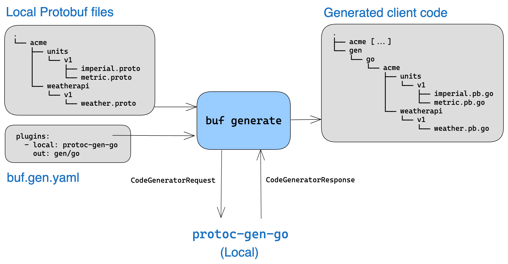

Buf-Protobuf工具链
1.背景介绍
1.1 protoc
Protobuf 是一种IDL 接口定义语言，使用时需要编译成目标语言，而protoc就是负责编译的工具。
protoc 通过插件生成特定语言/框架的代码，例如
protoc-gen-go插件用于生成 go 语言代码。protoc-gen-go-grpc用于生成 go-grpc 代码
1.2 protoc-gen-xxx插件
插件可执行文件需要命名为protoc-gen-xxx的形式，且确保配置在了环境变量 $PATH 中，以便 protoc 执行命令时能找到它
举个🌰
protoc --go_out=. --go_opt=paths=source_relative \ # go 代码输出到当前文件夹、直接基于.proto文件的原始路径，避免多层嵌套目录
--go-grpc_out=. --go-grpc_opt=paths=source_relative \
./pb/origin-hello.proto # 指定要编译的.proto文件路径
--xxx_out={OUT_PATH}：调用名为protoc-gen-xxx的插件，输出到指定目录--xxx_opt={OPTION},{OPTION}：向protoc-gen-xxx的插件传递参数
1.3 传统流程痛点
痛点1：依赖管理手动化
- 需手动下载 Protobuf 官方
.proto文件（如google/protobuf/timestamp.proto）到本地路径，并通过-I参数指定路径 - 依赖版本冲突频繁，需人工维护不同项目的依赖关系
痛点2：代码生成命令复杂
- 通过
protoc命令行工具生成代码，需手动拼接插件参数 - 每个语言插件（如
protoc-gen-go）需单独安装并配置环境变量
痛点3：配置文件分散
- 每个
.proto文件需手动添加语言选项（如go_package），跨团队协作时易冲突 - 无统一规范，不同项目配置差异大
痛点4：缺乏静态检查
- 无内置规则约束
.proto文件设计，需依赖人工审查命名规范、兼容性等。
2.工具简介
Buf 是一个Protocol Buffers（Protobuf）工具链，旨在简化 Protobuf 文件的管理、代码生成和 API 开发流程。
它通过提供依赖管理、静态检查、代码生成模板化等功能，显著提升了 Protobuf 的开发效率和规范性。
2.1 安装
- MacOS
brew install bufbuild/buf/buf
> buf --version
> 1.46.0
2.2 核心功能
- A linter that enforces good API design choices and structure.
- A breaking change detector that enforces compatibility at the source code or wire level.
- A generator that invokes your plugins based on configuration files.
- A formatter that formats your Protobuf files in accordance with industry standards.
- Integration with the Buf Schema Registry, including full dependency management.
2.2.1 依赖管理-自动化
- 通过
buf.yaml声明依赖，自动从 BSR(Buf Schema Registry) 拉取，其中维护了一些常用的三方包（如envoyproxy/protoc-gen-validate） - 依赖版本锁定（生成
buf.lock），避免版本冲突 - 指令：使用
buf dep update拉取依赖, 并且会生成buf.lock文件锁定版本
# buf.yaml
version: v2
deps:
- buf.build/googleapis/googleapis
- buf.build/envoyproxy/protoc-gen-validate
2.2.2 代码生成-模版化&管理集中化
- 通过
buf.gen.yaml集中管理代码生成规则 - 支持远程插件（如
buf.build/protocolbuffers/go），无需本地安装插件 - 指令：
buf generate自动生成代码
# buf.gen.yaml
version: v2
managed:
enabled: true
disable:
- file_option: go_package
module: buf.build/googleapis/googleapis
override:
- file_option: go_package_prefix # 指定 go 语言 package 前缀, 后续的会根据 pb 源文件的相对路径拼接.
value: github.com/xxf0512/buf-example/pb
plugins:
- remote: buf.build/protocolbuffers/go
out: gen
opt: paths=source_relative
- remote: buf.build/grpc/go
out: gen
opt: paths=source_relative
2.2.3 lint工具
- 内置 40+ 规则约束包命名、字段命名格式（如蛇形命名）等设计规范
- 指令：通过
buf breaking检查代码规范
2.2.4 breaking change 检查
- 指令：通过
buf breaking检查 API 变更是否破坏兼容性
3.使用方式
👇下面的使用基于buf-examples
3.1 项目配置
| 文件名 | 作用 |
|---|---|
| buf.yaml | 核心配置，定义了工作区、依赖、linter 以及 breaking 规则 |
| buf.lock | 明确每个依赖项的版本 |
| buf.gen.yaml | 定义了一组代码生成插件、它们的参数以及 proto 的路径 |
- 初始化配置
buf config init，生成buf.yaml
# 生成默认 buf.yaml，位于工作区的根目录
# For details on buf.yaml configuration, visit https://buf.build/docs/configuration/v2/buf-yaml
version: v2
modules: # 手动添加，指定模块工作区
- path: proto
lint:
use:
- STANDARD
ignore: # 忽略依赖文件
- proto/google/type/datetime.proto
breaking:
use:
- FILE
- 创建
buf.gen.yaml，指定代码生成规则
# touch buf.gen.yaml
version: v2
managed: # 托管模式，设置 file_option
enabled: true
override:
- file_option: go_package_prefix
value: github.com/bufbuild/buf-examples/gen
plugins: # 指定托管在 BSR 上的插件
- remote: buf.build/protocolbuffers/go
out: gen # 执行插件生成 go 代码，输出到 gen 目录
opt: paths=source_relative
- remote: buf.build/connectrpc/go
out: gen # 执行插件生成 connect-go 代码，输出到 gen 目录
opt: paths=source_relative
inputs: # 输入文件路径
- directory: proto
3.2 生成代码
执行buf generate,生成代码
.
├── buf.gen.yaml
├── buf.yaml
├── gen
│ ├── google
│ │ └── type
│ │ └── datetime.pb.go
│ └── pet
│ └── v1
│ ├── pet.pb.go
│ └── petv1connect
│ └── pet.connect.go
└── proto
├── google
│ └── type
│ └── datetime.proto
└── pet
└── v1
└── pet.proto
3.3 代码检查
执行buf lint,生成代码
proto/pet/v1/pet.proto:56:10:Field name "petID" should be lower_snake_case, such as "pet_id".
proto/pet/v1/pet.proto:61:9:Service name "PetStore" should be suffixed with "Service".
违反了STANDARD规则
- field 名称应当小写snake_case
- service 名称应当以 Service 结尾
参考资料
[1] buf-github
[2] Buf Docs